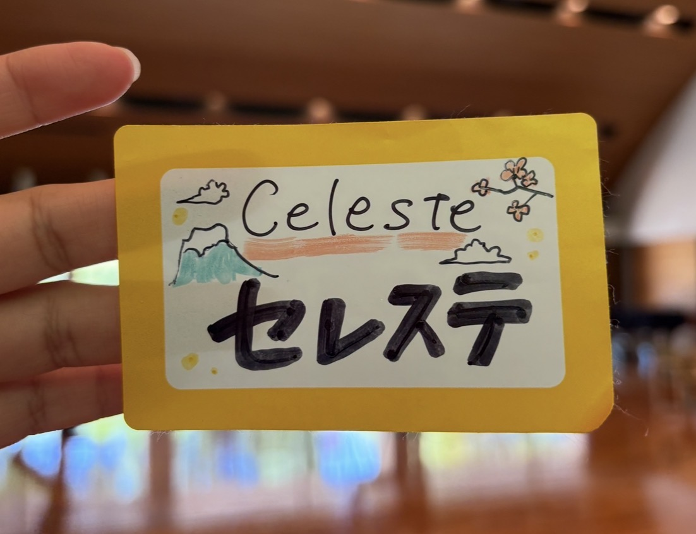

About Me
Hi, I'm Celeste.
I'm a UX designer based in the Dallas–Fort Worth area with a background in communication, digital media, and front-end development. I enjoy creating experiences that help people find information, make informed decisions, and navigate with confidence.
Through research, information architecture, and front-end development, I strive to create solutions that are clear, intuitive, and meaningful for the people using them.

My background
I graduated from the University of Texas at Arlington with a B.A. in Communication Technology, an Advertising minor, and a Digital Media Certificate. As a first-generation college graduate, I learned early on that opportunities are not always obvious. People need information that is easy to find, understand, and act on.
That perspective is a big part of why I am drawn to UX. I have always been interested in how people find information, make decisions, and navigate systems. Whether it is a website, an app, or an everyday process, I enjoy identifying friction points and finding ways to make experiences clearer, more enjoyable, and easier to navigate.
What I bring
Bilingual perspective. Being fluent in both English and Spanish has shaped how I think about communication, clarity, and accessibility.
Cross-functional experience. Through leadership roles in my university's UX Design Club, my work as an AV Director, and real client projects, I have learned how to collaborate across different stakeholders and communicate ideas clearly.
Real-world project experience. I have worked on projects for nonprofit, public sector, and small business clients. Most recently I served as Project Lead for Maroon 9's website redesign, guiding the project from research and information architecture through front-end development and usability testing.
Global perspective. In 2025, I received the Benjamin A. Gilman International Scholarship and studied abroad in Japan. I was drawn to Japan specifically because of how intentionally its systems and spaces are designed for people to navigate with ease. Experiencing that firsthand, as someone new to the country and the culture, reinforced how much good design can make people feel supported rather than lost.

What I'm looking for
I am looking for opportunities where I can keep growing as a designer while contributing meaningful work from day one. I enjoy projects that balance user needs, business goals, and real-world constraints. I am drawn to teams that take usability seriously, not just as a checklist, but as the core of how they build.
Long term, I hope to create experiences that help people learn, connect, and access opportunities more easily, especially people who have historically been left out of those spaces.
Skills & Tools
UX & Research
- User Research
- Usability Testing
- Information Architecture
- Wireframing
- Interaction Design
- Personas & Scenarios
Design Tools
- Figma
- Adobe Photoshop
- Adobe Illustrator
- Adobe Premiere Pro
- Canva
Development
- HTML
- CSS
- JavaScript
- Responsive Design
- SEO Basics
Communication
- English (Fluent)
- Spanish (Fluent)
- Content Strategy
- Digital Media
- Social Media & Analytics
What others say
"Add a testimonial from your professor, supervisor, or pastor here. Ask them to speak specifically about your work ethic, attention to detail, or leadership — one specific example is worth more than general praise."
"Second testimonial placeholder. A quote from your church manager, a Maroon 9 teammate, or a professor who can speak to a specific project or quality of your work."
Let's work together.
I'm currently open to entry-level UX opportunities in the DFW area and beyond.